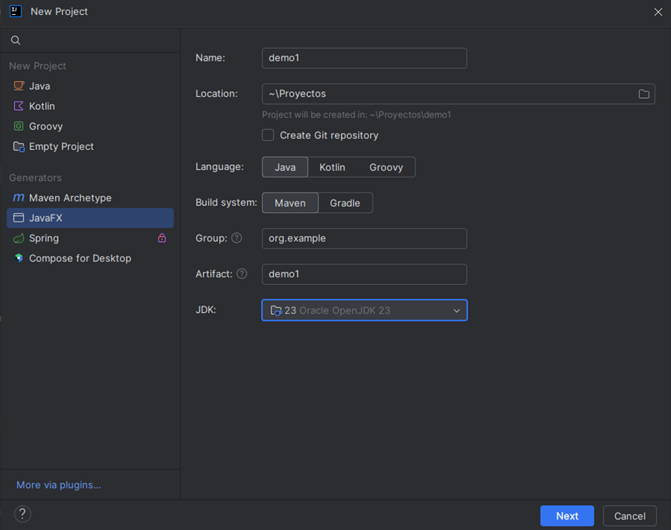
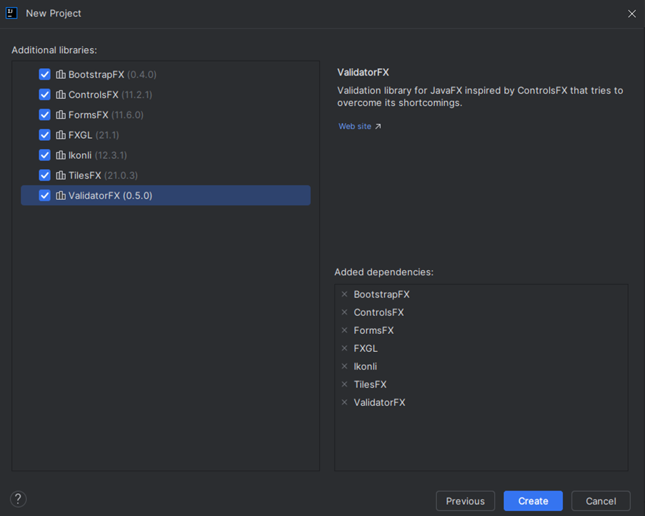
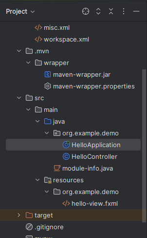
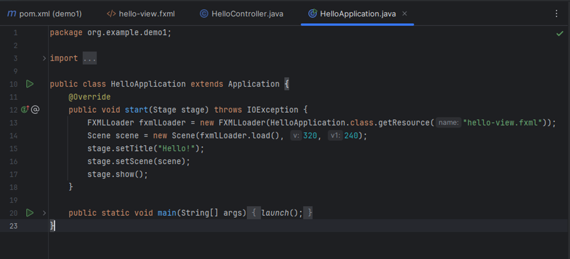
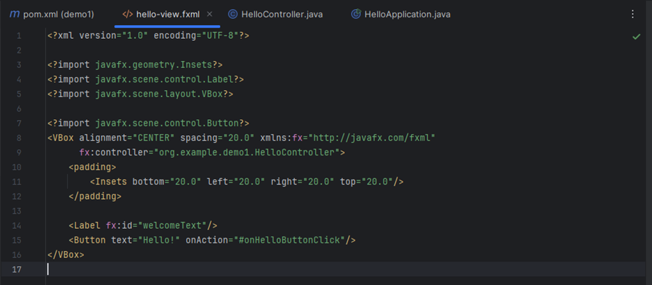
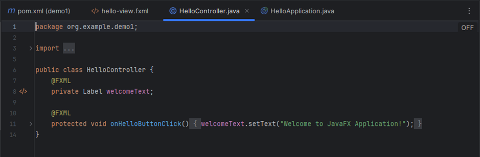
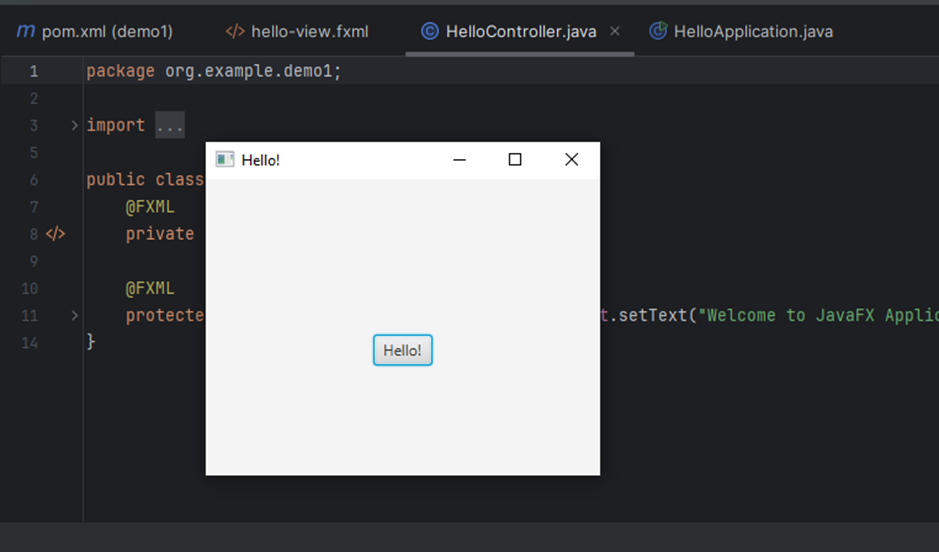
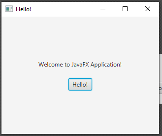
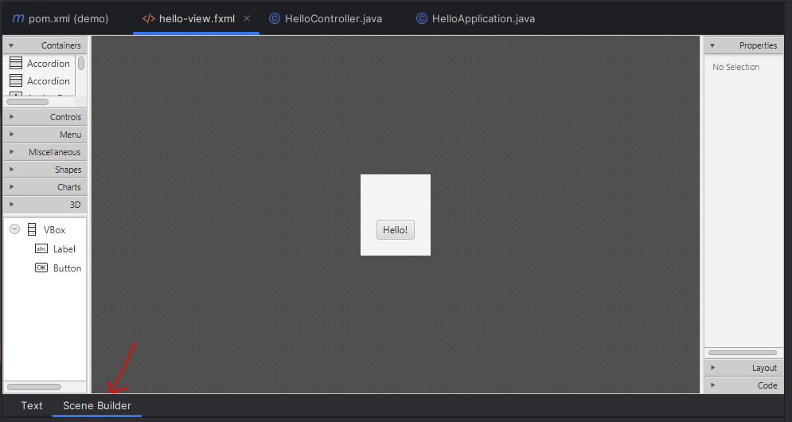
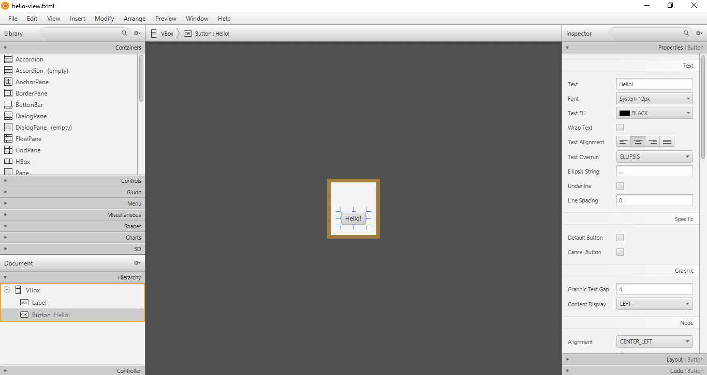

Para ponerlo todo a punto de forma fácil y rápida, utilizaremos los instaladores de IntellliJ IDEA como ayuda. Sigue los siguientes pasos:
1. Crea un nuevo proyecto de tipo JavaFX,



2. OpenJFX dispone de una API que proporciona clases e interfaces que son el núcleo para crear aplicaciones. Esta API está basada en MVC, que es el acrónimo de Model-View-Controller (Modelo-Vista-Controlador), un patrón de diseño de software que divide una aplicación en tres componentes interconectados. Este patrón es particularmente útil en aplicaciones con interfaces gráficas de usuario, como las desarrolladas con JavaFX.
La que vemos a continuación es la clase principal (Stage) → lanza la aplicación y carga el FXML (vista).

FXML (Scene) → define la interfaz.

Y nos queda el Controlador Java (Node) → la clase que maneja los eventos (clics, acciones...). Es el intermediario entre el modelo y la vista. Siempre debe estar asociado a un archivo FXML. Utiliza anotaciones para enlazar los componentes de la interfaz de usuario con variables y métodos.

3. Si ejecutamos la aplicación, el proyecto de ejemplo que nos proporciona IntelliJ IDEA tiene la siguiente forma:

Si clickamos en el botón, aparecerá el texto dándonos la bienvenida a JavaFX:

Instalar Scene Builder
Descárgalo desde:
👉 https://gluonhq.com/products/scene-builder/
e instálalo como cualquier programa.
Al finalizar, anota la ruta del ejecutable, por ejemplo: C:\Program Files\SceneBuilder\SceneBuilder.exe
- Ve a File > Settings.
- Busca Languages & Frameworks > JavaFX
- En el campo "Path to SceneBuilder", pega la ruta del ejecutable que acabas de copiarte.
A partir de ese momento, quedará habilitada la vista más amigable del FMXL desde la pestaña Scene Builder:

Aunque si lo prefieres, puedes usar directamente la aplicación desde fuera del IDE (suele ser más fluida):
